RỐI LOẠN ĐIỆN GIẢI VÀ NGỘ ĐỘC THUỐC TRÊN ĐIỆN TÂM ĐỒ
Tăng kali máu (Hyperkalemia) – ECG
Hyperkalaemia, Hyperkalemia, tăng kali máu
Kali (K⁺)
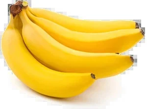
- Kali là cation nội bào chính (intracellular cation)
- Nồng độ sinh lý là 3,4 - 5,6 mmol/l
- Tăng kali máu có 3 mức độ:
- Tăng kali máu nhẹ (5,6-6 mmol/l)
- Tăng kali máu trung bình (6-7 mmol/l)
- Tăng kali máu nặng (>7 mmol/l)
- Tăng kali máu
- Làm chậm dẫn truyền qua hệ thống dẫn truyền (giảm dẫn truyền – negative dromotropy)
- Ức chế nút xoang và nút nhĩ – thất (giảm nhịp – negative chronotropy)
- Kali chủ yếu có trong
- Chuối, khoai tây, đậu
Nguyên nhân tăng kali máu
- Các nguyên nhân thường gặp nhất của tăng kali máu
- Truyền dịch có kali
- Truyền máu để lâu; hồng cầu bắt đầu vỡ, giải phóng K⁺
- Khi pH thay đổi 0,1, nồng độ kali thay đổi khoảng 0,5 mmol/l. Khi pH giảm – kali tăng, và ngược lại
- Suy thận, dẫn đến giảm bài tiết K⁺ vào nước tiểu
- Huỷ tế bào trong cơ thể (tán huyết, ly giải u); kali được giải phóng vào máu từ các tế bào bị vỡ
- Thuốc (ví dụ Spironolactone)
ECG và tăng kali máu
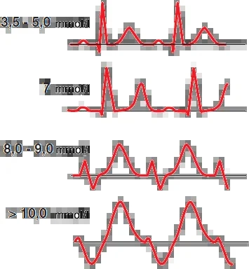
- Khi tăng kali máu tăng dần, các dấu hiệu sau xuất hiện tuần tự:
- Sóng T cao nhọn chủ yếu ở các chuyển đạo trước tim
- Thường cao hơn sóng R
- (giống tháp Eiffel)
- Phức bộ QRS giãn rộng
- Dần dần chuyển thành sóng hình sin
- Sóng T cao nhọn chủ yếu ở các chuyển đạo trước tim
- Với tăng kali máu > 9 mmol/l có nguy cơ:
- Rung thất
- Vô tâm thu
- Đường cong ECG không phải lúc nào cũng tương quan chính xác với nồng độ kali
K⁺ > 5,6 mmol/l
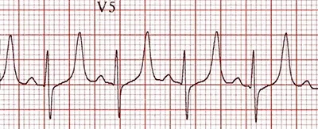
- Sóng T cao nhọn (dấu hiệu chính)
- Thường cao hơn sóng R
- (giống tháp Eiffel)
- Dấu hiệu phụ:
- Khoảng QT ngắn lại
K⁺ > 6,5 mmol/l
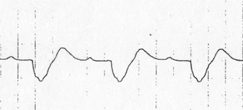
- Phức bộ QRS giãn rộng (dấu hiệu chính)
- Dấu hiệu phụ:
- Block nhĩ – thất độ I
- Sóng P dẹt
- Sóng P biến mất
- Khi thấy phức bộ QRS giãn rộng,
luôn phải nghĩ đến tăng kali máu
K⁺ > 7 mmol/l
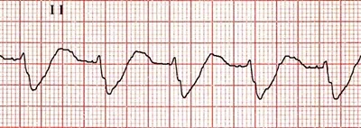
- Phức bộ QRS giãn rộng không có sóng P
(dấu hiệu chính) - Dấu hiệu phụ:
- Block nhĩ – thất
- Block nhánh
- Block phân nhánh
- Rung thất
K⁺ > 9 mmol/l
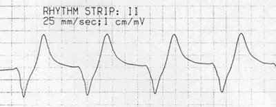
- Sóng hình sin (dấu hiệu chính)
- Sóng hình sin là đồ thị của hàm số sin
- Dấu hiệu phụ:
- Rung thất
- Vô tâm thu
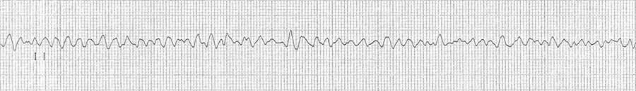
Rung thất và tăng kali máu
- Nồng độ kali không phải lúc nào cũng tương quan với hình ảnh ECG
- Bệnh nhân có ECG tương đối bình thường vẫn có thể tăng kali máu rất nặng
- Và có nguy cơ rung thất hoặc thậm chí vô tâm thu
- Trên ECG có hình ảnh rung thất
- Tần số khoảng 350/phút
- Các phức bộ QRS biên độ thấp, không đều
- Rung thất không được điều trị có thể tiến triển thành vô tâm thu trong khoảng 2 phút
K⁺ > 20 mmol/l (dung dịch liệt tim)
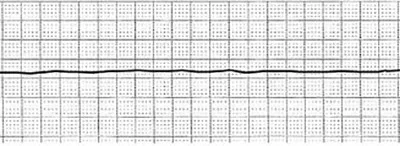
- Dung dịch liệt tim (cardioplegic solution)
- Chứa kali nồng độ: 20 - 30 mmol/l
- Liệt tim (cardioplegia)
- Là việc ngừng tim tạm thời có chủ đích
- Trong các phẫu thuật tim
Liệt tim (Cardioplegia)
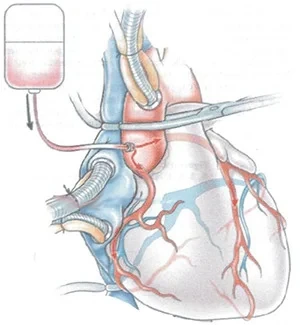
- Liệt tim hạ thân nhiệt (hypothermic cardioplegia)
- Là phương pháp trong mổ để bảo vệ cơ tim khỏi thiếu máu cục bộ
- Nồng độ kali cực cao 20 - 30 mmol/l
- Gây vô tâm thu ở thì tâm trương
- Cách sử dụng dung dịch liệt tim:
- Dòng máu qua động mạch chủ và các tĩnh mạch chủ được cắt bằng kẹp
- Sau đó, dung dịch liệt tim được bơm vào động mạch chủ (xuôi dòng)
- Các canule lớn ở tĩnh mạch chủ và động mạch chủ
- Được nối với tuần hoàn ngoài cơ thể
Giả nhồi máu và tăng kali máu
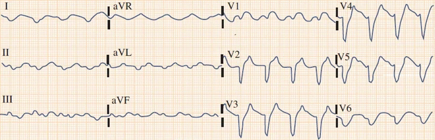
- Tăng kali máu đôi khi ở các chuyển đạo trước tim (V1-2) giả dạng ST chênh lên
- Nó có thể giả dạng nhồi máu cơ tim STEMI vách liên thất
- Tất nhiên, các đoạn chênh lên biến mất sau khi điều chỉnh kali
Tăng kali máu (7,1 mmol/l)
- Ở các chuyển đạo chi (I, II, III, aVR, aVF, aVL), đường cong ECG giống một sóng hình sin
- ST chênh lên (V1-V2)
- Bệnh nhân bị tăng kali máu (7,1 mmol/l), không phải STEMI vách liên thất
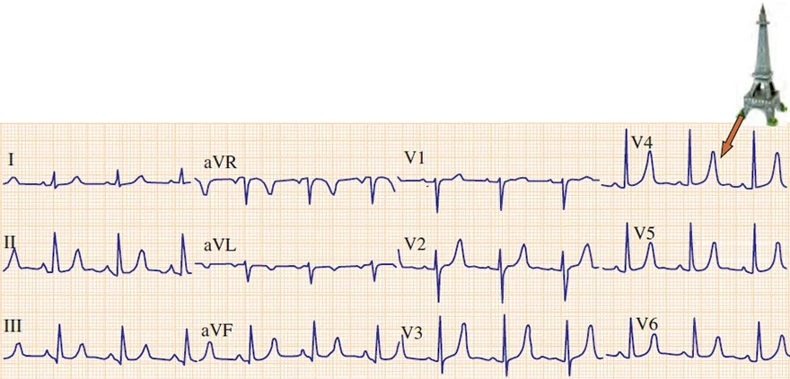
Tăng kali máu (6,5 mmol/l)
- Sóng T cao, nhọn
- Chúng giống tháp Eiffel
- Luôn nghĩ đến tăng kali máu nếu sóng T cao hơn sóng R (chuyển đạo V1-2)
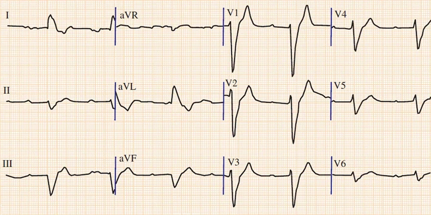
Tăng kali máu (7,3 mmol/l)
- Sóng T cao, nhọn
- Giống tháp Eiffel
- Luôn nghĩ đến tăng kali máu nếu sóng T cao hơn sóng R (chuyển đạo V1-4, II, III, aVR, aVF)
- Phức bộ QRS giãn rộng (0,28s)
- Block nhĩ – thất độ I
- Khoảng PQ kéo dài (0,4s)
- Sóng P dẹt
- Sau khi điều chỉnh tăng kali máu,
ECG trở về nhịp xoang bình thường
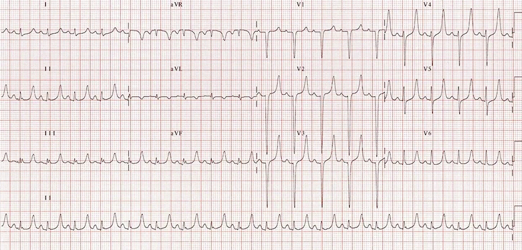
Tăng kali máu (7 mmol/l)
- Sóng T cao, nhọn
- Giống tháp Eiffel
- Luôn nghĩ đến tăng kali máu nếu sóng T cao hơn sóng R (ở hầu hết các chuyển đạo)
- Ở các chuyển đạo dưới (II, III, aVF), sóng T giống phức bộ QRS
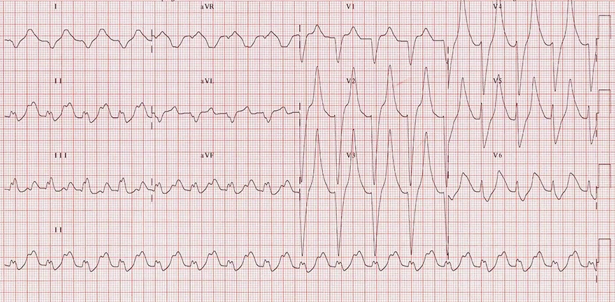
Tăng kali máu (9,2 mmol/l)
- Sóng T cao, nhọn
- Giống tháp Eiffel
- Luôn nghĩ đến tăng kali máu nếu sóng T cao hơn sóng R (ở hầu hết các chuyển đạo)
- Phức bộ QRS giãn rộng (0,2s)
- Ở chuyển đạo I và aVR, chúng giống một sóng hình sin
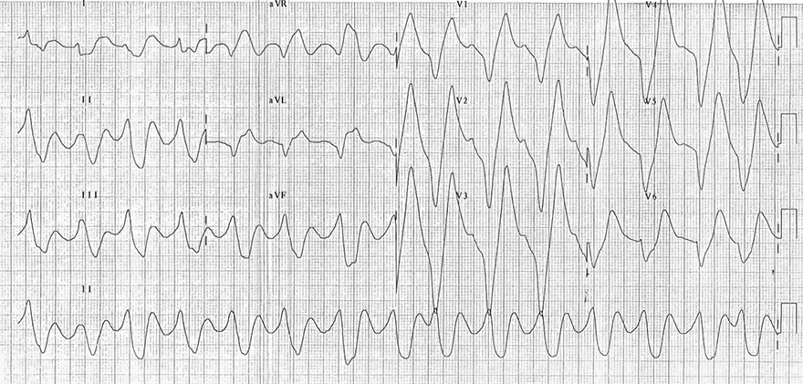
Tăng kali máu (9 mmol/l)
- Sóng T cao, nhọn
- Giống tháp Eiffel
- Luôn nghĩ đến tăng kali máu nếu sóng T cao hơn sóng R (ở hầu hết các chuyển đạo)
- Phức bộ QRS giãn rộng (khoảng 0,24s)
- Giống một sóng hình sin (sóng T và phức bộ QRS trở nên khó phân biệt)
- Không phân biệt được sóng P
- Bệnh nhân bị tăng kali máu do tiêu cơ vân sau gắng sức thể lực nặng
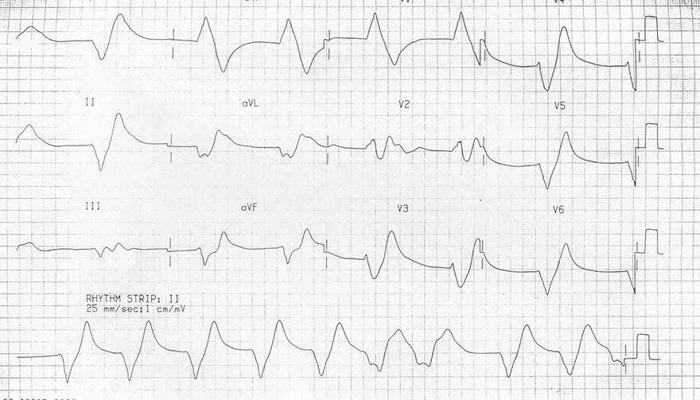
Tăng kali máu (9,9 mmol/l)
- Sóng T cao, nhọn
- Giống tháp Eiffel
- Luôn nghĩ đến tăng kali máu nếu sóng T cao hơn sóng R (ở hầu hết các chuyển đạo)
- Phức bộ QRS giãn rộng (khoảng 0,38s)
- Giống một sóng hình sin
- Không phân biệt được sóng P
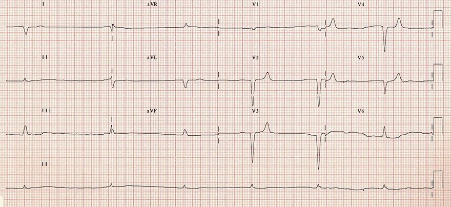
Tăng kali máu (7 mmol/l)
- Sóng T cao, nhọn
- Giống tháp Eiffel
- Luôn nghĩ đến tăng kali máu nếu sóng T cao hơn sóng R (ở hầu hết các chuyển đạo)
- Không phân biệt được sóng P
- Nhịp bộ nối
- Tần số tim: 35/phút
Hạ kali máu (Hypokalemia) – ECG
Hypokalaemia, Hypokalemia, hạ kali máu
Kali (K⁺)
- Kali là cation nội bào chính
- Nồng độ sinh lý là 3,4 - 5,6 mmol/l
- Hạ kali máu có 3 mức độ:
- Hạ kali máu nhẹ (3 - 3,4 mmol/l)
- Hạ kali máu trung bình (2,5 - 3 mmol/l)
- Hạ kali máu nặng (< 2,5 mmol/l)
- Hạ kali máu
- Kéo dài quá trình tái cực của nhĩ và thất
- Kali chủ yếu có trong
- Chuối, khoai tây, đậu
Nguyên nhân hạ kali máu
- Các nguyên nhân thường gặp nhất của hạ kali máu
- Thay đổi pH 0,1 làm nồng độ kali thay đổi khoảng 0,5 mmol/l. Khi pH giảm, nồng độ kali tăng, và ngược lại
- Tăng mất K⁺ qua thận với một số thuốc lợi tiểu
- Mất K⁺ vào đường tiêu hoá: nôn, tiêu chảy
ECG và hạ kali máu
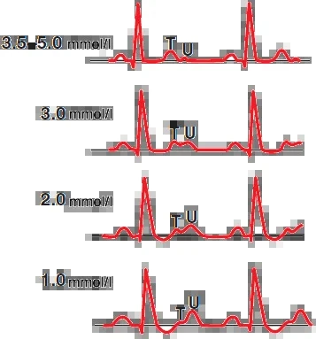
- Các thay đổi trên ECG xuất hiện khi hạ kali máu < 2,7 mmol/l
- Mức độ hạ kali máu tương quan không nhiều với hình ảnh ECG
- Khi kali xuống dưới 2,7 mmol/l, xuất hiện các dấu hiệu sau:
- Sóng U ưu thế (cao hơn sóng T)
- Kéo dài khoảng QT (QU)
- Sóng T dẹt đến âm
- Kéo dài khoảng PQ
- ST chênh xuống nhẹ
- Sóng P lớn lên
Loạn nhịp và hạ kali máu
- Hạ kali máu thường dẫn đến:
- Loạn nhịp trên thất
- Rung nhĩ
- Cuồng nhĩ
- Nhịp nhanh nhĩ khu trú
- Loạn nhịp thất
- Nhịp nhanh thất
- Rung thất
- Torsades de Pointes
- Ngoại tâm thu
- Ngoại tâm thu nhĩ
- Ngoại tâm thu bộ nối
- Ngoại tâm thu thất
- Loạn nhịp trên thất
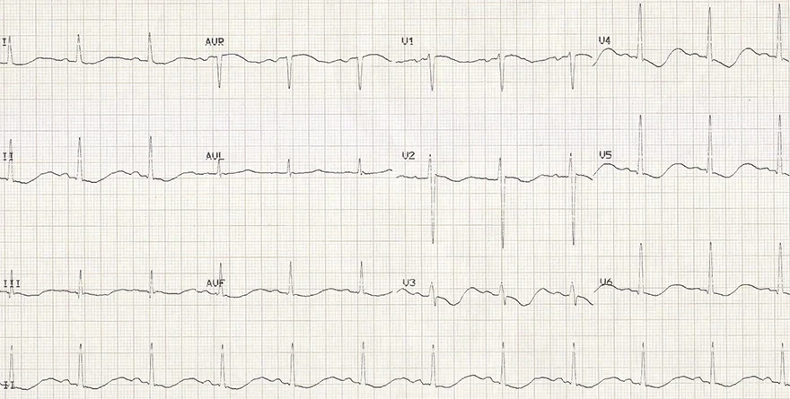
Hạ kali máu (1,7 mmol/l)
- ST chênh xuống (I, II, V4 - V5)
- Sóng T âm (V2 - V6)
- Sóng U dương (V2 - V6)
- Khoảng QT (QU) kéo dài ( > 0,44s)
- Nguy cơ loạn nhịp thất ác tính Torsades de Pointes
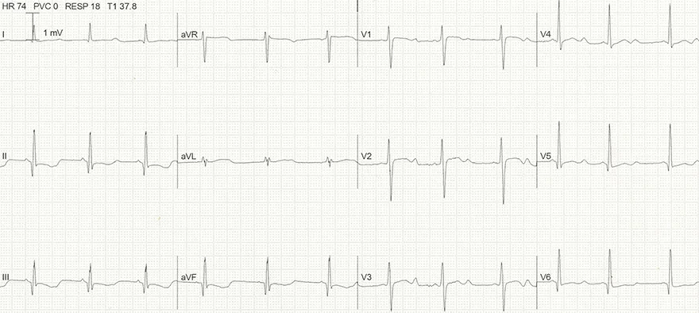
Hạ kali máu (1,9 mmol/l)
- ST chênh xuống (II, III, aVF)
- Sóng T âm (II, III, aVF)
- Sóng U (II, III, aVF, V1-6)
- Sóng U ở các chuyển đạo V1 - V6 trông giống sóng P
- Khoảng QT (QU) kéo dài ( > 0,44s)
- Nguy cơ loạn nhịp thất ác tính Torsades de Pointes
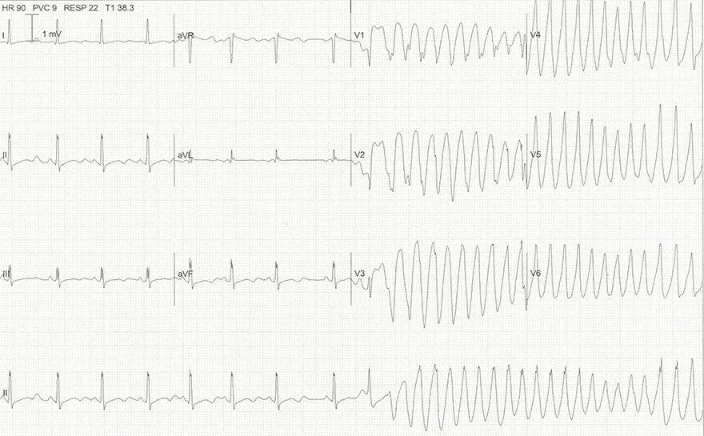
Hạ kali máu (1,9 mmol/l) và Torsades de Pointes
- ST chênh xuống (II, III, aVF)
- Có sóng U
- Khoảng QT (QU) kéo dài ( > 0,44s)
- Hiện tượng R trên T khởi phát loạn nhịp thất ác tính Torsades de Pointes
Tăng canxi máu (Hypercalcemia) – ECG
Hypercalcaemia, Hypercalcemia, tăng canxi máu
Canxi (Calcium, Ca²⁺)
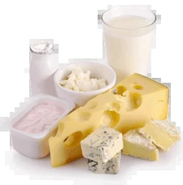
- Canxi chủ yếu chịu trách nhiệm cho quá trình tái cực của điện thế hoạt động
- Nồng độ sinh lý là 2,1 - 2,6 mmol/l
- Tăng canxi máu có 3 mức độ:
- Tăng canxi máu nhẹ ( 2,7 - 2,9 mmol/l )
- Tăng canxi máu trung bình ( 3,0 - 3,4 mmol/l )
- Tăng canxi máu nặng ( > 3,4 mmol/l )
- Canxi chủ yếu có trong:
- Sữa, phô mai và sữa chua
Nguyên nhân tăng canxi máu
- Các nguyên nhân thường gặp nhất của tăng canxi máu
- Di căn xương phá huỷ Ca²⁺ từ xương, ví dụ ung thư biểu mô vú. Tuy nhiên, di căn trong ung thư biểu mô tuyến tiền liệt lại kích thích tạo xương và dẫn đến tiêu thụ Ca²⁺, nghịch lý là gây hạ canxi máu
- Bất động – bất động kéo dài dẫn đến huỷ xương và giải phóng Ca²⁺
- Đa u tuỷ xương – bệnh lý ác tính của tế bào lympho B; tế bào lympho B tăng sinh trong xương và phá huỷ Ca²⁺
- Thừa vitamin D – vitamin D làm tăng hấp thu Ca²⁺ ở ruột
- Sarcoidosis – tạo ra các chất có chức năng tương tự vitamin D
- Cường cận giáp – tuyến cận giáp sản xuất quá mức hormone cận giáp, chất này phá huỷ Ca²⁺ từ xương
- Bệnh thận mạn – cường cận giáp phát triển
ECG và tăng canxi máu
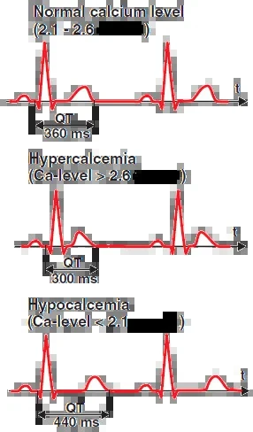
- Đặc điểm chính:
- Khoảng QT ngắn lại
- Đặc điểm phụ:
- Sóng Osborn (xuất hiện trong tăng canxi máu nặng)
- Thường tạo một khấc ở cuối phức bộ QRS
- Đôi khi có thể giả dạng ST chênh lên (nhồi máu cơ tim STEMI)
- Nhánh lên của sóng T dốc hơn nhánh xuống
- Sóng Osborn (xuất hiện trong tăng canxi máu nặng)
- Trong tăng canxi máu nặng ( Ca²⁺ > 3,4 mmol/l ) nguy cơ bao gồm:
- Rung thất
Đường cong ECG và các chất khoáng
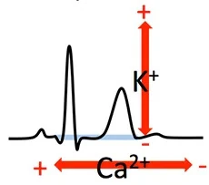
- Tăng kali máu làm sóng T lớn lên
- Hạ kali máu làm sóng T nhỏ đi
- Tăng canxi máu làm khoảng QT ngắn lại
- Hạ canxi máu làm khoảng QT dài ra

Tăng canxi máu ( 3,7 mmol/l )
- Khoảng QT ngắn lại ( QTc: 0,33s )
- Sóng Osborn (V2-V5)
- Khấc ở cuối QRS
- Nhịp bộ nối
- Tần số tim: 50/phút
- Không thấy sóng P

Tăng canxi máu ( 4,1 mmol/l )
- Khoảng QT ngắn giới hạn ( QTc: 0,36s )
- Sóng Osborn (đánh dấu bằng mũi tên)
- Khấc ở cuối QRS
- Nhịp xoang
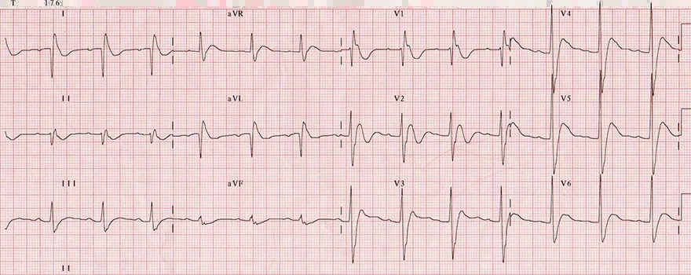
Tăng canxi máu ( 6,1 mmol/l )
- Khoảng QT ngắn giới hạn ( QTc: 0,35s )
- Sóng Osborn ( "khấc" ở V1 )
- Ca bệnh là một bệnh nhân 41 tuổi bị cường cận giáp, đã xuất hiện rung thất ngay sau khi ghi ECG này
Hạ canxi máu (Hypocalcemia) – ECG
Hypocalcaemia, Hypocalcemia, hạ canxi máu
Canxi (Ca²⁺)
- Canxi chủ yếu chịu trách nhiệm cho quá trình tái cực của điện thế hoạt động
- Nồng độ sinh lý là 2,1 - 2,6 mmol/l
- Hạ canxi máu có 2 mức độ:
- Hạ canxi máu nhẹ ( 1,9 – 2,1 mmol/l )
- Hạ canxi máu nặng ( < 1,9 mmol/l )
- Canxi chủ yếu có trong:
- Sữa, phô mai và sữa chua
Nguyên nhân hạ canxi máu
- Các nguyên nhân thường gặp nhất của hạ canxi máu
- Suy cận giáp – Ca²⁺ nằm lại trong xương và không được giải phóng vào máu
- Hội chứng DiGeorge – một rối loạn di truyền hiếm gặp ảnh hưởng đến sự phát triển các cơ quan vùng cổ, trong đó có tuyến cận giáp, dẫn đến suy cận giáp
- Giả suy cận giáp – các tế bào không đáp ứng với hormone cận giáp, gây thiếu hụt tương đối hormone này
- Thiếu vitamin D – Ca²⁺ không được hấp thu từ ruột khi thiếu vitamin D
- Bệnh thận mạn – cơ chế bệnh sinh phức tạp, ban đầu gây hạ canxi máu, về sau dẫn đến tăng canxi máu
- Tăng thông khí – khi thở sâu và nhanh, Ca²⁺ gắn vào protein huyết tương, gây thiếu hụt Ca²⁺ tương đối. Bệnh nhân bị chuột rút. Tình trạng này hết nhanh sau khi ngừng tăng thông khí
- Viêm tuỵ cấp nặng – các enzym tuỵ được giải phóng phân huỷ mỡ thành acid béo, các acid này tạo muối với Ca²⁺, làm giảm nồng độ Ca²⁺. Cùng cơ chế đó gây hạ magiê máu
- Di căn – một số di căn xương gây tạo xương mới tiêu thụ Ca²⁺, chủ yếu là di căn ung thư tuyến tiền liệt. Ngược lại, di căn ung thư vú phá huỷ Ca²⁺ từ xương, gây tăng canxi máu
ECG và hạ canxi máu
- Dấu hiệu chính:
- Khoảng QT kéo dài
- Nguy cơ Torsades de Pointes
- Khoảng QT kéo dài
- Dấu hiệu phụ:
- Khoảng PQ ngắn lại
- Sóng T dẹt đến âm
- ST chênh lên
- Có thể giả dạng nhồi máu STEMI
Đường cong ECG và các chất khoáng
- Tăng kali máu làm sóng T tăng lên
- Hạ kali máu làm sóng T giảm đi
- Tăng canxi máu làm khoảng QT ngắn lại
- Hạ canxi máu làm khoảng QT dài ra
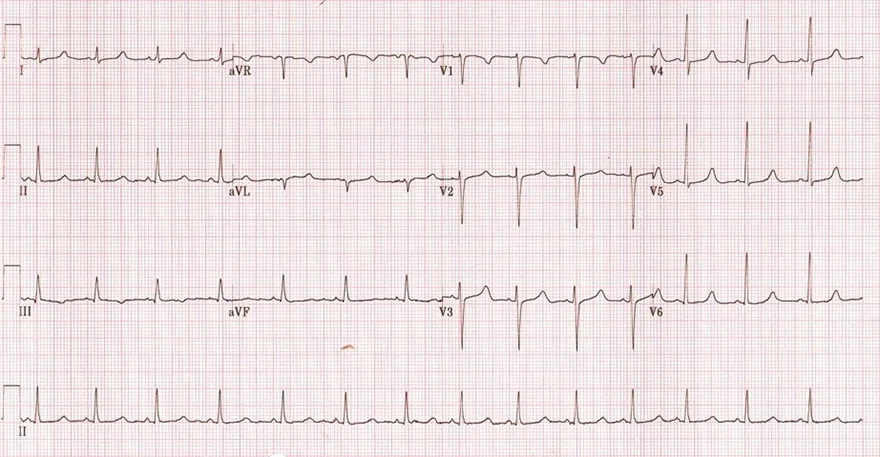
Hạ canxi máu (1,4 mmol/l)
- Khoảng QT kéo dài ( QTc 0,5s )
- Nhịp xoang
- Bệnh nhân bị suy cận giáp sau cắt tuyến giáp
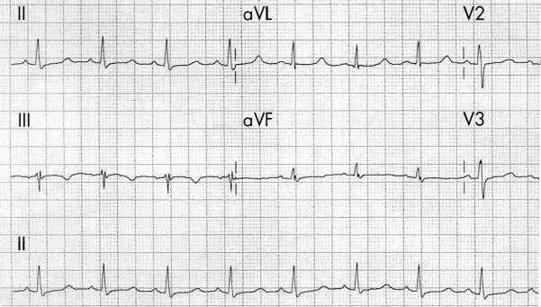
Hạ canxi máu (1,32 mmol/l)
- Khoảng QT kéo dài ( QTc 0,5s )
- Nhịp xoang
- Bệnh nhân bị suy cận giáp kèm hội chứng DiGeorge
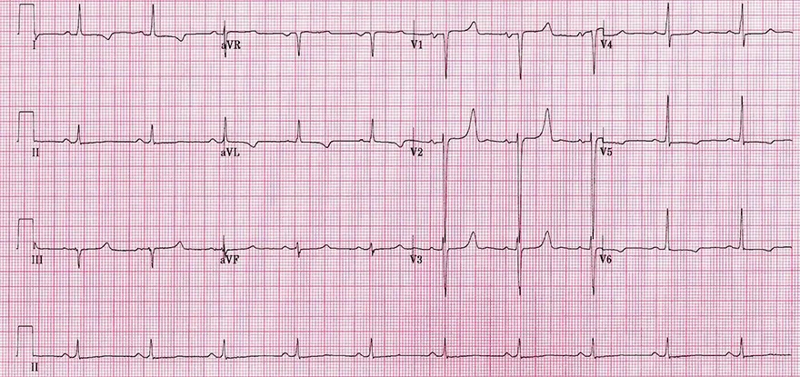
Hạ canxi máu (1,2 mmol/l)
- Khoảng QT kéo dài ( QTc 0,5s )
- Nhịp xoang
- Sóng T dẹt đến âm (I, aVL, V5, V6)
- ST chênh lên (V1-2)
Tăng magiê máu và hạ magiê máu (Hypermagnesemia and Hypomagnesemia) – ECG
Hypermagnesaemia, Hypomagnesaemia, magiê huyết thanh cao và thấp
Magiê (Magnesium, Mg²⁺)
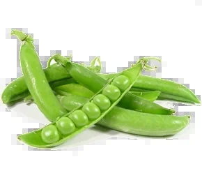
- Là đồng yếu tố (co-factor) của nhiều enzym (khoảng 300)
- Ảnh hưởng đến các kênh ion (K⁺, Na⁺, Ca²⁺)
- Thứ phát ảnh hưởng cả điện thế hoạt động
- Nồng độ bình thường là: 0,8 - 1,0 mmol/l
- Hạ magiê máu và hạ kali máu
- Hạ magiê máu gây
- Tăng mất kali qua thận
- Do đó, hạ magiê máu dẫn đến hạ kali máu
- Hạ magiê máu gây
- Magiê chủ yếu có trong
- Đậu Hà Lan, đậu, đậu lăng
Nguyên nhân tăng magiê máu hoặc hạ magiê máu
- Các nguyên nhân thường gặp nhất của tăng magiê máu
- Huỷ tế bào trong cơ thể (tán huyết, ly giải u), magiê được giải phóng vào máu từ các tế bào bị vỡ
- Suy thận, dẫn đến giảm bài tiết magiê vào nước tiểu
- Các nguyên nhân thường gặp nhất của hạ magiê máu
- Nghiện rượu – nghiện rượu đi kèm suy dinh dưỡng (ăn uống không đủ). Rượu kích thích mất magiê qua thận
- Thuốc lợi tiểu – kích thích mất magiê qua thận
- Tiêu chảy – tiêu chảy mạn gây mất magiê qua phân, ví dụ trong bệnh Crohn, viêm loét đại tràng
- Viêm tuỵ cấp nặng – các enzym tuỵ được giải phóng phân huỷ mỡ thành acid béo, các acid này tạo muối với magiê. Điều này làm giảm nồng độ magiê tự do. Cơ chế tương tự dẫn đến hạ canxi máu
- Nhồi máu cơ tim – trong 48 giờ đầu sau nhồi máu cơ tim, tới 80% bệnh nhân có hạ magiê máu. Trong nhồi máu, các catecholamine (adrenaline, noradrenaline) được giải phóng, làm magiê di chuyển vào khoang nội bào
ECG và tăng magiê máu hoặc hạ magiê máu
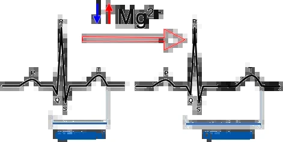
- Các thay đổi trên ECG khi rối loạn magiê
- Rất không đặc hiệu
- Thường không gây bất kỳ thay đổi nào trên ECG
- Cả tăng và hạ magiê máu đều làm kéo dài khoảng QT
- Có nguy cơ tăng xuất hiện Torsades de Pointes
- Trong hạ magiê máu ( < 0,8 mmol/l ), có thể xuất hiện các thay đổi ECG không đặc hiệu:
- Khoảng QT kéo dài
- Hạ magiê máu gây hạ kali máu, tình trạng này cũng làm kéo dài khoảng QT
- Sóng T dẹt
- Khoảng QT kéo dài
- Trong tăng magiê máu ( > 1 mmol/l ), có thể xuất hiện các thay đổi ECG không đặc hiệu:
- Khoảng QT kéo dài
- Khoảng PQ kéo dài
- Phức bộ QRS giãn rộng

Hạ magiê máu (0,66 mmol/l)
- Nhịp nhanh xoang
- Tần số tim: 110/phút
- Khoảng QT kéo dài ( > 440ms)
- Khoảng QT 0,38s
- Hiệu chỉnh (QTc): 515ms
- Khoảng QT kéo dài, bất kể nguyên nhân, đều làm tăng nguy cơ Torsades de Pointes
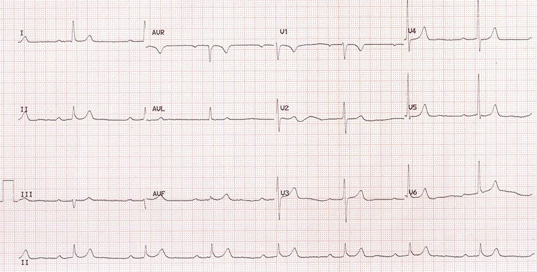
Tăng magiê máu (1,18 mmol/l)
- Nhịp chậm xoang (tần số tim < 50/phút)
- Tần số tim: 47/phút
- Block nhĩ – thất độ I
- Khoảng PQ kéo dài 0,32s ( > 0,2s)
- Khi có block nhĩ – thất độ I kèm nhịp chậm xoang, cần nghĩ đến:
- Quá liều thuốc chẹn beta hoặc thuốc chẹn kênh canxi
- Nhồi máu cơ tim thành dưới
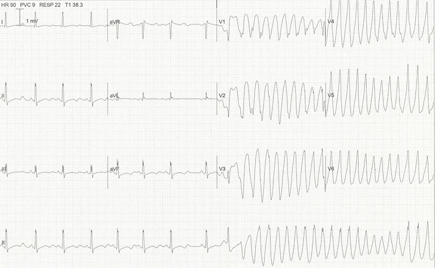
Hạ magiê máu (0,7 mmol/l), hạ kali máu (1,9 mmol/l) và Torsades de Pointes
- Khoảng QT (QU) kéo dài ( > 0,44s)
- Khoảng QT (QU) kéo dài bất kể nguyên nhân đều làm tăng nguy cơ Torsades de Pointes
- Bệnh nhân này có hạ kali máu nặng kèm hạ magiê máu
- Hạ kali máu có tiên lượng xấu hơn hạ magiê máu
- Hạ kali máu
- ST chênh xuống (II, III, aVF)
- Có sóng U
- Khoảng QT (QU) kéo dài ( > 0,44s)
- Hiện tượng R trên T khởi phát loạn nhịp thất ác tính Torsades de Pointes
Digoxin (ria mép Salvador Dali) – ECG
Digoxin effect – hiệu ứng digoxin
Digitalis (mao địa hoàng)
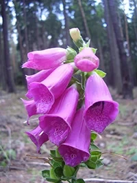
- Mao địa hoàng (Digitalis)
- Là một chi thực vật có khoảng 35 loài
- Các cây này chứa glycoside, được dùng để bào chế thuốc digoxin
- Digoxin được dùng:
- Để kiểm soát tần số tim trong rung nhĩ
- Để điều trị suy tim
- Tác dụng của digoxin:
- Tăng co bóp (positive inotropic) – làm tăng sức co bóp cơ tim
- Giảm dẫn truyền (negative dromotropic) – làm chậm dẫn truyền xung động qua hệ thống dẫn truyền
- Giảm nhịp (negative chronotropic) – làm chậm tần số tim
Cửa sổ điều trị của digoxin
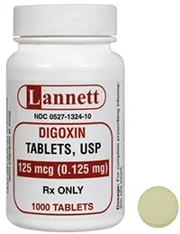
- Digoxin có cửa sổ điều trị hẹp
- Nồng độ điều trị trong huyết thanh là 0,5 - 1,5 ng/ml
- Nồng độ < 0,5 ng/ml là không hiệu quả
- Nồng độ > 2 ng/ml là ngộ độc và có nguy cơ loạn nhịp
ECG và digoxin
- Các thay đổi trên ECG xuất hiện ngay ở nồng độ digoxin trong khoảng điều trị
- Bệnh nhân không bị ngộ độc digitalis
- Thay đổi chủ yếu ở các chuyển đạo có sóng R cao (I, V5, V6)
- Digoxin ảnh hưởng đến quá trình tái cực (đoạn ST và sóng T)
- Các dấu hiệu ECG chính
- ST chênh xuống hình đáy chén (boat-shaped)
- Sóng T dẹt, âm, hai pha
- Các dấu hiệu ECG phụ
- Khoảng PQ kéo dài
- Khoảng QT ngắn lại
- Sóng U
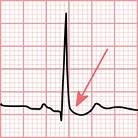
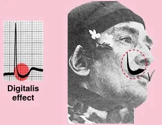
Dấu hiệu Salvador Dali với digoxin
- ST chênh xuống hình đáy chén do digoxin
- Đôi khi được gọi là dấu hiệu Salvador Dali
- Vì chúng giống bộ ria mép của Salvador Dali
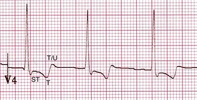
Sóng T hai pha với digoxin
- Sóng T hai pha (âm – dương)
- Là dấu hiệu điển hình của digoxin
- Đôi khi sóng T chuyển tiếp thành sóng U
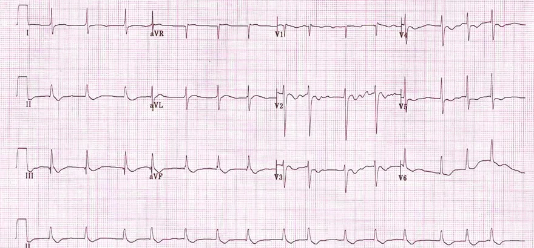
Digoxin và rung nhĩ
- Rung nhĩ
- Nhịp tim không đều một cách không đều
- Không thấy sóng P
- ST chênh xuống hình đáy chén (II, III, aVF, V5, V6)
- Bệnh nhân không ngộ độc digoxin
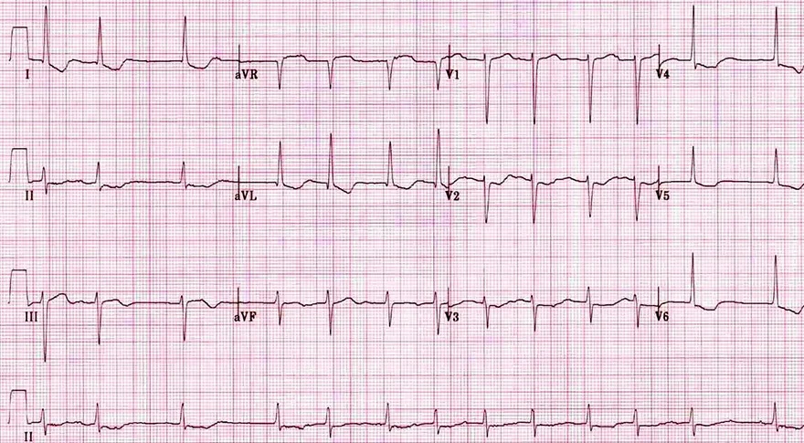
Digoxin và rung nhĩ
- Rung nhĩ
- Nhịp tim không đều một cách không đều
- Không thấy sóng P
- ST chênh xuống hình đáy chén (V4-V6, I, aVL)
- Bệnh nhân không ngộ độc digoxin
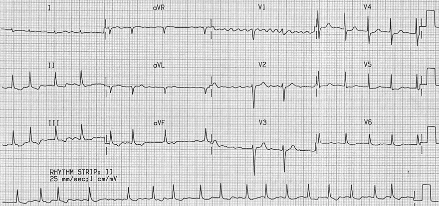
Digoxin và rung nhĩ
- Rung nhĩ
- Nhịp tim không đều một cách không đều
- Không thấy sóng P
- Đây không phải là cuồng nhĩ
- Ở V1 có các sóng dạng răng cưa, nhưng nhịp tim không đều một cách không đều
- ST chênh xuống hình đáy chén (V6, II)
- Bệnh nhân không ngộ độc digoxin
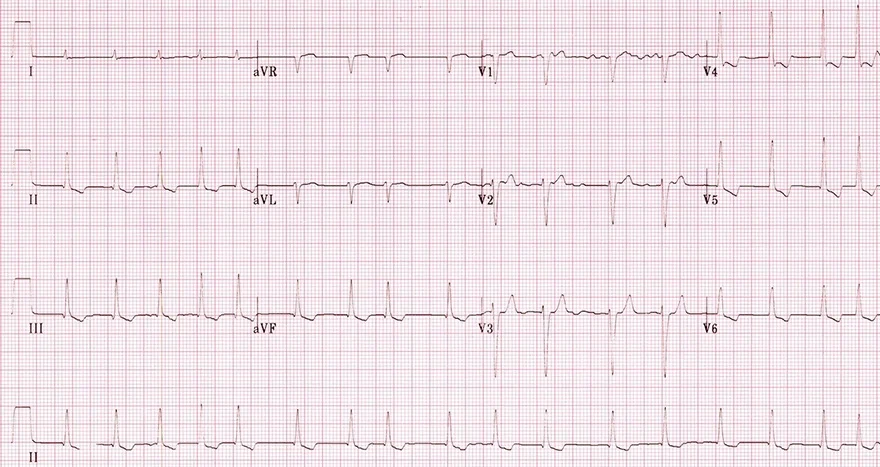
Digoxin và rung nhĩ
- Rung nhĩ
- Nhịp tim không đều một cách không đều
- Không thấy sóng P
- ST chênh xuống dốc xuống (II, III, aVF, V4-V6)
- Đây không phải kiểu điển hình của digoxin (không hình đáy chén)
- ST chênh xuống dốc xuống có thể gặp trong phì đại thất trái
- Tuy nhiên, tiêu chuẩn điện thế (chỉ số Sokolow-Lyon) không đạt
- Bệnh nhân đang dùng digoxin, và phì đại thất trái là ít khả năng
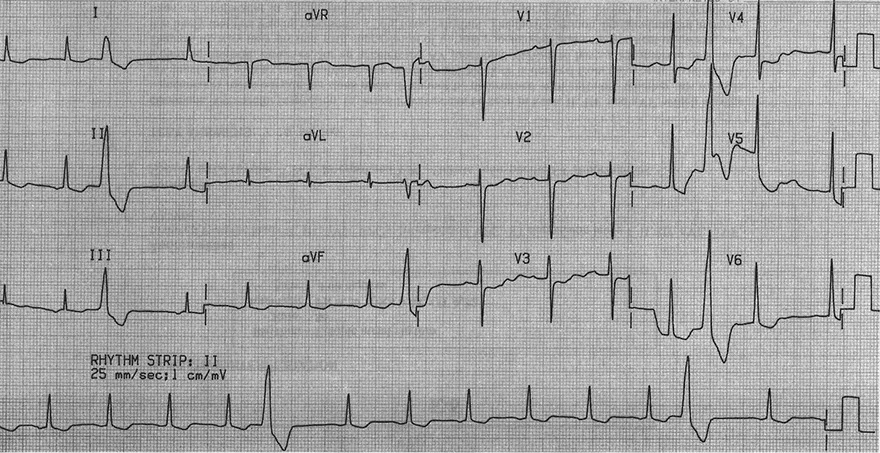
Digoxin và nhịp xoang
- Nhịp xoang
- Sóng P đi trước phức bộ QRS (V1)
- ST chênh xuống hình đáy chén (I, II, III, aVF, V5-V6)
- Ngoại tâm thu thất
- Có thể gợi ý ngộ độc digoxin
- Bệnh nhân có thể đang ngộ độc digoxin
Ngộ độc digoxin (Digoxin Toxicity) – ECG
Digoxin toxicity, Digitalis toxicity – ngộ độc digoxin, ngộ độc digitalis
Cửa sổ điều trị của digoxin
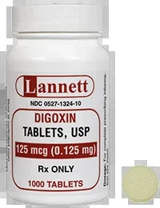
- Digoxin được dùng để:
- Kiểm soát tần số tim trong rung nhĩ
- Điều trị suy tim
- Digoxin có cửa sổ điều trị hẹp
- Nồng độ điều trị trong huyết tương là 0,5 - 1,5 ng/ml
- Nồng độ < 0,5 ng/ml là không hiệu quả
- Nồng độ > 2 ng/ml là ngộ độc và có nguy cơ loạn nhịp tim
ECG và digoxin
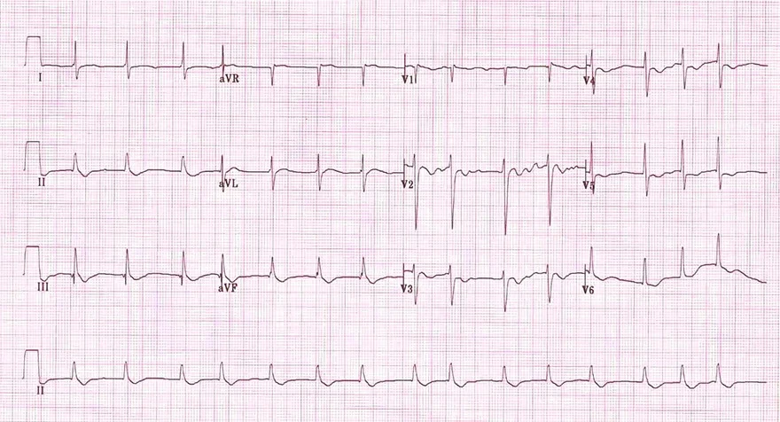
- Các thay đổi trên ECG có thể xuất hiện ngay cả ở nồng độ digoxin trong khoảng điều trị
- Bệnh nhân không bị ngộ độc digoxin
- Thay đổi chủ yếu ở các chuyển đạo có sóng R cao (I, V5, V6)
- Digoxin ảnh hưởng đến quá trình tái cực
(đoạn ST và sóng T) - Các dấu hiệu ECG chính
- ST chênh xuống dốc xuống (downsloping)
- Sóng T dẹt, âm, hai pha
Digoxin và rung nhĩ
- Rung nhĩ
- Tần số tim không đều một cách không đều
- Không thấy sóng P
- ST chênh xuống dốc xuống (II, III, aVF, V5, V6)
- Bệnh nhân không bị ngộ độc digoxin
- Sóng T dẹt đến âm (ở tất cả các chuyển đạo)
Ngộ độc digoxin
- Trong ngộ độc digoxin (> 2 ng/ml), các thay đổi xảy ra ở hệ thống dẫn truyền:
- Tăng tính tự động
- Giảm dẫn truyền qua nút nhĩ – thất
- Thường gặp nhất là,
- Loạn nhịp trên thất (do tăng tính tự động)
- Kèm đáp ứng thất chậm (do dẫn truyền qua nút nhĩ – thất bị chậm lại)
- Ngộ độc digoxin nặng lên khi có:
- Hạ kali máu
- Hạ magiê máu
- Tăng canxi máu
- Thiếu oxy
ECG và ngộ độc digoxin
- Ngộ độc digoxin không có một kiểu hình ECG đặc trưng duy nhất
- Thường gặp nhất là loạn nhịp trên thất và block nhĩ – thất
- Các loạn nhịp thường gặp nhất trong ngộ độc digoxin:
- Ngoại tâm thu thất (nhịp đôi, nhịp ba)
- Block nhĩ – thất các mức độ
- Loạn nhịp trên thất kèm đáp ứng thất chậm
- Nhịp bộ nối gia tốc
- Rung nhĩ
- Cuồng nhĩ
- Rung nhĩ được "điều hoà" (controlled atrial fibrillation) (có đáp ứng thất đều – phức bộ QRS)
- Trong block nhĩ – thất độ III, một nhịp thoát (bộ nối hoặc thất) được kích hoạt
- Nhịp thoát này là nhịp đều
- Bệnh nhân có rung nhĩ và tần số phức bộ QRS đều
- Vì các xung động trên thất bị block do block nhĩ – thất độ III
- Trong block nhĩ – thất độ III, một nhịp thoát (bộ nối hoặc thất) được kích hoạt
- Trong ngộ độc nặng,
- Nhịp nhanh thất đa dạng
- Nhịp nhanh thất hai chiều
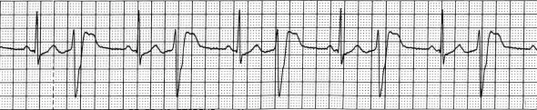
Ngộ độc digoxin và ngoại tâm thu thất nhịp đôi
- Ngoại tâm thu thất nhịp đôi
- Cứ mỗi phức bộ QRS thứ hai là một ngoại tâm thu thất
- Bệnh nhân bị ngộ độc digoxin
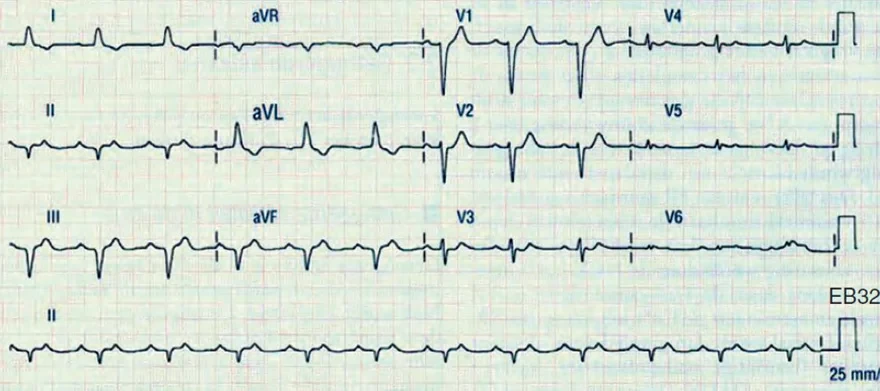
Ngộ độc digoxin, nhịp nhanh nhĩ khu trú và block nhĩ – thất độ II (2:1)
- Nhịp nhanh nhĩ khu trú
- Tần số sóng P khoảng 150/phút
- Cứ mỗi sóng P thứ hai nằm trong sóng T (xem chuyển đạo II)
- Block nhĩ – thất độ II (2:1)
- Cứ mỗi sóng P thứ hai được dẫn xuống thất
- Tần số thất (QRS) khoảng 75/phút
- Đây là loạn nhịp trên thất kèm đáp ứng thất chậm
- Bệnh nhân bị ngộ độc digoxin
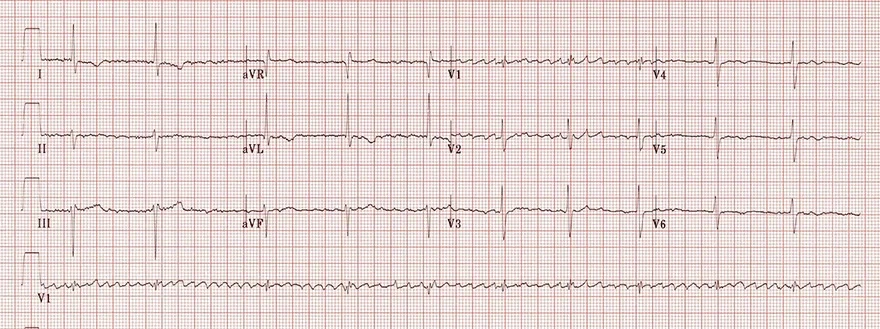
Ngộ độc digoxin và rung nhĩ được điều hoà
- Tần số nhĩ khoảng 400/phút
- Đây là rung nhĩ sóng thô với biên độ > 0,5 mm, giống cuồng nhĩ
- Tần số phức bộ QRS đều 60/phút
- Rung nhĩ hầu như luôn có đáp ứng thất không đều
- Block nhĩ – thất độ III
- Nhĩ và thất bị cách ly về điện với nhau
- Một nhịp thoát bộ nối với tần số 60/phút được kích hoạt
- Bệnh nhân bị ngộ độc digoxin
- Rung nhĩ được "điều hoà" là dấu hiệu đặc trưng của ngộ độc digoxin
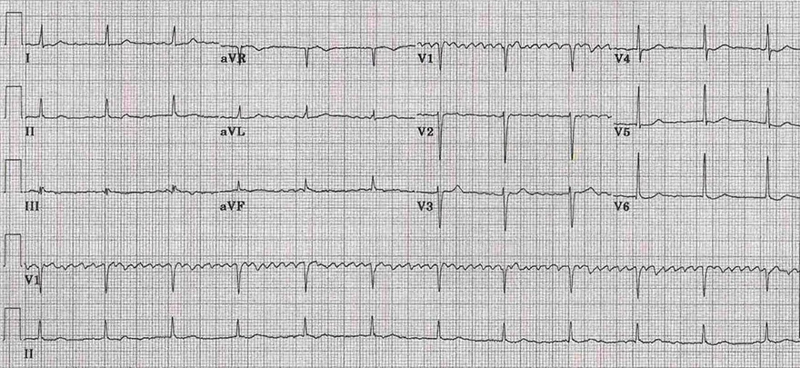
Ngộ độc digoxin và rung nhĩ được điều hoà
- Tần số nhĩ khoảng 400/phút
- Đây là rung nhĩ sóng thô với biên độ > 0,5 mm, giống cuồng nhĩ
- Tần số phức bộ QRS đều 75/phút
- Rung nhĩ hầu như luôn có đáp ứng thất không đều
- Block nhĩ – thất độ III
- Nhĩ và thất bị cách ly về điện với nhau
- Một nhịp thoát bộ nối với tần số 75/phút được kích hoạt
- Bệnh nhân bị ngộ độc digoxin
- Rung nhĩ được "điều hoà" là dấu hiệu đặc trưng của ngộ độc digoxin
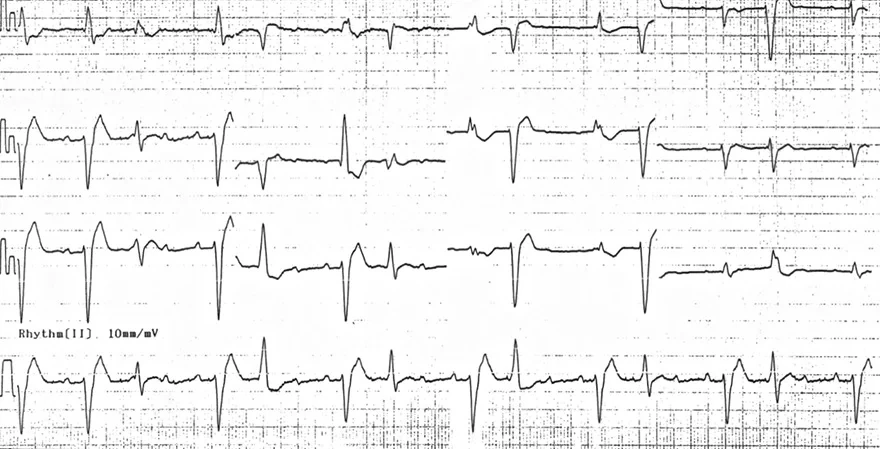
Ngộ độc digoxin, nhịp nhanh nhĩ khu trú, block nhĩ – thất, nhịp đôi
- Nhịp nhanh nhĩ khu trú
- Tần số: 150/phút
- Block nhĩ – thất độ II (dẫn truyền 4:1)
- Ngoại tâm thu thất nhịp đôi
- Sau mỗi phức bộ QRS xoang là một ngoại tâm thu thất
- Bệnh nhân bị ngộ độc digoxin
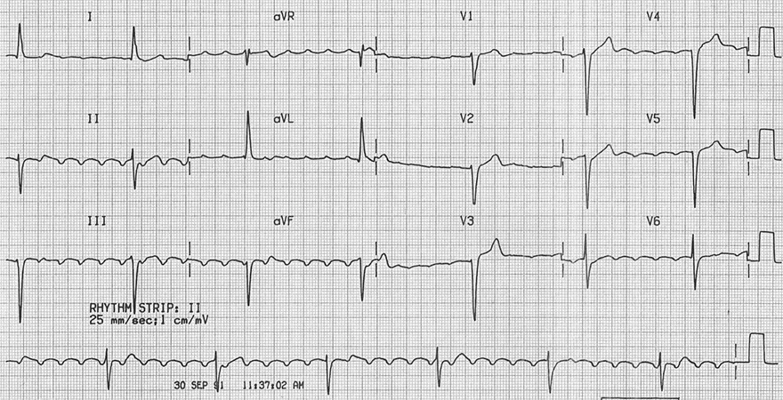
Ngộ độc digoxin và cuồng nhĩ
- Tần số sóng F: 300/phút
- Sóng F có hình ảnh "răng cưa" đặc trưng
- Cuồng nhĩ luôn có tần số sóng F khoảng 300/phút
- Dẫn truyền xuống thất: 5:1, cho thấy dẫn truyền xuống thất bị chậm
- Cứ mỗi sóng F thứ 5 mới có một phức bộ QRS theo sau
- Bệnh nhân bị ngộ độc digoxin
Ngộ độc digoxin và nhịp nhanh thất hai chiều
- Tần số: 130/phút
- Phức bộ QRS giãn rộng (> 0,12s)
- Trục điện tim thay đổi khoảng 180° (thấy rõ nhất ở chuyển đạo II liên tục)
- Bệnh nhân bị ngộ độc digoxin
- Khi thấy nhịp nhanh thất hai chiều, luôn phải nghĩ đến ngộ độc digoxin
Ngộ độc digoxin và nhịp nhanh thất hai chiều
- Tần số: 150/phút
- Phức bộ QRS giãn rộng (> 0,12s)
- Trục điện tim thay đổi khoảng 180° (thấy rõ nhất ở chuyển đạo II)
- Phân ly nhĩ – thất
- Sóng P (dấu sao ở V1) độc lập với các phức bộ QRS
- Phân ly nhĩ – thất là dấu hiệu then chốt của nhịp nhanh thất
- Bệnh nhân bị ngộ độc digoxin
- Khi thấy nhịp nhanh thất hai chiều, luôn phải nghĩ đến ngộ độc digoxin
Digoxin và nhịp xoang
- Nhịp xoang
- Sóng P đi trước phức bộ QRS (V1)
- ST chênh xuống dốc xuống (I, II, III, aVF, V5-V6)
- Đây là dấu hiệu đặc trưng của việc dùng digoxin, bệnh nhân không bị ngộ độc digoxin
- Nhiều ngoại tâm thu thất
- Có thể gợi ý nồng độ digoxin tăng ở mức giới hạn
Thuốc chống trầm cảm ba vòng (ngộ độc) – ECG
Tricyclic antidepressants Overdose (Sodium-Channel Blocker Toxicity) – quá liều thuốc chống trầm cảm ba vòng (ngộ độc thuốc chẹn kênh natri)
Trầm cảm
- Đòi hỏi ít nhất 5 trong các triệu chứng sau kéo dài 2 tuần:
- Buồn bã, bi quan, cảm giác thất bại, tự ghét bản thân, cảm giác tội lỗi, khóc thường xuyên, giảm lòng tự trọng, ý nghĩ tự sát, mất hứng thú, mất ngủ, v.v.
- Trầm cảm là một rối loạn tâm thần nghiêm trọng, ảnh hưởng đến
- 20% phụ nữ
- 12% nam giới
- Đây là tình trạng mất cân bằng chất dẫn truyền thần kinh trong não:
- Serotonin, norepinephrine và dopamine
Thuốc chống trầm cảm ba vòng
- Ức chế tái hấp thu các chất dẫn truyền thần kinh:
- Điều này làm tăng nồng độ của chúng,
tạo tác dụng chống trầm cảm
- Điều này làm tăng nồng độ của chúng,
- Ngoài ra, chúng còn là thuốc chẹn kênh natri
- Ảnh hưởng đến điện thế hoạt động
- Có thể gây thay đổi ECG trong trường hợp quá liều
Thuốc chẹn kênh natri
- Là một nhóm thuốc lớn có tác dụng chẹn kênh natri
- Làm chậm quá trình khử cực của điện thế hoạt động
- Các thay đổi ECG đặc trưng xuất hiện khi ngộ độc
- Các thuốc chẹn kênh natri:
- Thuốc chống trầm cảm ba vòng (thuốc chẹn kênh natri được dùng phổ biến nhất)
- Thuốc chống loạn nhịp (nhóm Ia, Ic)
- Thuốc tê tại chỗ
- Thuốc chống sốt rét
- Propranolol
- Carbamazepine
- Quinine
ECG và thuốc chẹn kênh natri (ngộ độc)
- Dẫn truyền thất kéo dài (QRS > 100ms) ở chuyển đạo II
- Nhịp nhanh xoang
- Trục lệch phải
- Sóng R tận (R´) > 3mm ở aVR
- R/S > 0,7 ở aVR
- Độ rộng QRS:
- QRS > 100ms – tăng nguy cơ co giật
- QRS > 160ms – tăng nguy cơ loạn nhịp thất
- Khi gặp các dấu hiệu ECG này, luôn phải nghĩ đến
- Ngộ độc thuốc chống trầm cảm ba vòng
- Chúng là các thuốc chẹn kênh natri được dùng phổ biến nhất
- Trong bối cảnh gia đình
Thuốc chống trầm cảm ba vòng (ngộ độc)
- Nhịp nhanh xoang (120/phút)
- Độ rộng phức bộ QRS > 0,1s (chuyển đạo II)
- Sóng R tận (R´) > 3mm (aVR)
- Trên ECG, ngộ độc thuốc chẹn kênh natri
- Thường gặp nhất là thuốc chống trầm cảm ba vòng
- Bệnh nhân này quá liều Prothiaden
ECG 1/3: Thuốc chống trầm cảm ba vòng (ngộ độc)
- Nhịp nhanh xoang (105/phút)
- Block nhĩ – thất độ I
- Khoảng PQ > 0,2s (V2)
- Độ rộng QRS > 0,1s (chuyển đạo II)
- Sóng R tận (R´) > 3mm (aVR)
- Bệnh nhân quá liều một thuốc chống trầm cảm ba vòng (Prothiaden)
ECG 2/3: Thuốc chống trầm cảm ba vòng (ngộ độc tiến triển)
- Đây là cùng một bệnh nhân với ECG trước
- Ngộ độc thuốc chống trầm cảm ba vòng tiến triển
- QRS rộng hơn > 160ms
- Các phức bộ QRS giống một sóng hình sin (chuyển đạo I), tương tự tăng kali máu
ECG 3/3: Thuốc chống trầm cảm ba vòng (sau điều trị ngộ độc)
- Bệnh nhân đã được điều trị quá liều thuốc chống trầm cảm ba vòng
- (natri bicarbonate, đặt nội khí quản và tăng thông khí)
- Phức bộ QRS không còn giãn rộng (< 0,12s)
- Sóng R tận ưu thế (aVR) đã biến mất
Thuốc chống trầm cảm ba vòng (ngộ độc)
- Nhịp nhanh xoang (140/phút)
- QRS giãn rộng cực độ > 0,16s
(chuyển đạo II) - Sóng R tận (R´) > 3mm (aVR)
- Bệnh nhân quá liều nặng một thuốc chống trầm cảm ba vòng (Prothiaden)
Flecainide (ngộ độc)
- Nhịp nhanh xoang (130/phút)
- QRS giãn rộng > 0,1s (chuyển đạo II)
- Sóng R tận (R´) > 3mm (aVR)
- Flecainide là thuốc chống loạn nhịp nhóm Ic (thuốc chẹn kênh natri)
Flecainide (ngộ độc)
- Nhịp xoang (90/phút)
- QRS giãn rộng cực độ > 160ms (chuyển đạo II)
- Sóng R tận (R´) > 3mm ở aVR
- Flecainide là thuốc chống loạn nhịp nhóm Ic (thuốc chẹn kênh natri)
- Mức độ ngộ độc nặng hơn ECG trước (phức bộ QRS rộng hơn)
Thuốc chẹn beta (ngộ độc) – ECG
Beta blockers overdose, toxicity – quá liều, ngộ độc thuốc chẹn beta
Hệ thần kinh giao cảm
- Hệ giao cảm làm tăng hiệu suất hoạt động của cơ thể
- Được hoạt hoá khi stress (thể chất, tâm lý)
- Hệ phó giao cảm hoạt động đối kháng (ngược lại)
- Được hoạt hoá lúc nghỉ ngơi
- Các chất trung gian là catecholamine (hormone stress):
- Adrenaline và Noradrenaline
- Gắn vào các thụ thể beta-adrenergic
- Chủ yếu nằm ở tim và mạch máu
- Adrenaline
- Được giải phóng vào tuần hoàn từ tuyến thượng thận
- Ở nồng độ cực cao, có thể gây
- Bệnh cơ tim Takotsubo
- Noradrenaline
- Được giải phóng từ các đầu tận thần kinh
- Bao gồm cả những đầu tận chi phối tim
- Ở nồng độ cực cao, có thể gây
- Cơ tim đờ (stunned myocardium)
- Được giải phóng từ các đầu tận thần kinh
Thuốc chẹn beta (BB)
- Chúng là thuốc huỷ giao cảm (sympatholytics)
- Hậu tố "-lytic" nghĩa là làm gián đoạn, phong bế
- Chúng gắn vào các thụ thể beta-adrenergic
- Phong bế catecholamine ở:
- Hệ thống dẫn truyền
- Cơ tim hoạt động
- Phong bế catecholamine ở:
- Chúng bảo vệ tim khỏi quá tải
- Hạ huyết áp
- Tim hoạt động ở "chế độ tiết kiệm"
- Mỗi thuốc chẹn beta đều có hậu tố -ol
- Propranolol, Sotalol, Acebutolol...
- Thuốc chẹn beta chọn lọc trên tim
- Chỉ gắn vào các thụ thể ở tim
- Thuốc chẹn beta không chọn lọc trên tim
- Gắn vào các thụ thể cả trong và ngoài tim
ECG và thuốc chẹn beta (ngộ độc)
- Thuốc chẹn beta và thuốc chẹn kênh canxi gây ra cùng những thay đổi ECG khi ngộ độc
- Các dấu hiệu chính của ngộ độc thuốc chẹn beta
- Block nhĩ – thất độ I (là dấu hiệu đầu tiên của ngộ độc)
- Nhịp chậm xoang
- Các dấu hiệu phụ của ngộ độc thuốc chẹn beta
- Block nhĩ – thất độ II và độ III
- Nhịp bộ nối
- Nhịp thất
ECG và Propranolol, Sotalol (ngộ độc)
- Propranolol và Sotalol là các thuốc chẹn beta đồng thời còn chẹn:
- Kênh natri, hoặc kênh kali
- Do đó, chúng nguy hiểm hơn khi ngộ độc
- Nguy cơ loạn nhịp thất ác tính
Propranolol (ngộ độc)
- Đồng thời chẹn kênh natri
- Giống thuốc chống trầm cảm ba vòng
- Các dấu hiệu ECG bao gồm
- QRS giãn rộng ( > 120ms )
- Sóng R dương ở aVR ( > 3mm )
- Nguy cơ nhịp nhanh thất
Sotalol (ngộ độc)
- Đồng thời chẹn kênh kali
- Các dấu hiệu ECG bao gồm
- Khoảng QT kéo dài ( > 440ms )
- Nguy cơ Torsades de Pointes
- Khoảng QT kéo dài ( > 440ms )
Thuốc chẹn beta (ngộ độc)
- Block nhĩ – thất độ I
- Khoảng PQ > 0,2s
- Là dấu hiệu đầu tiên của ngộ độc thuốc chẹn beta
- Nhịp chậm xoang (45/phút)
- Bệnh nhân đã quá liều một thuốc chẹn beta
- Thuốc chẹn kênh canxi có thể tạo ra cùng kiểu hình ECG này
Thuốc chẹn beta (ngộ độc)
- Nhịp bộ nối
- Tần số: 30/phút
- Không thấy sóng P
- Phức bộ QRS hẹp
- Bệnh nhân đã quá liều một thuốc chẹn beta
- Thuốc chẹn kênh canxi có thể tạo ra cùng kiểu hình ECG này
Thuốc chẹn beta (ngộ độc)
- Block nhĩ – thất độ III
- Tần số sóng P: 90/phút
- Tần số QRS: 30/phút
- Phân ly nhĩ – thất
- Sóng P và phức bộ QRS độc lập với nhau vì nhĩ và thất bị cách ly về điện
- Các phức bộ QRS có dạng block nhánh phải,
điều này có thể là:- Nhịp bộ nối kèm block nhánh phải
- Nhịp thất với ổ ngoại vị ở thất trái
- Bệnh nhân đã quá liều một thuốc chẹn beta
- Thuốc chẹn kênh canxi có thể tạo ra cùng kiểu hình ECG này
Sotalol (ngộ độc)
- Sotalol là thuốc chẹn beta đồng thời chẹn kênh kali
- Khoảng QT kéo dài (0,6s)
- Khoảng QT kéo dài, bất kể nguyên nhân, đều làm tăng nguy cơ Torsades de Pointes
- Nhịp chậm xoang (43/phút)
Torsades de Pointes
- Torsades de Pointes
- Là một nhịp nhanh thất đa dạng xuất hiện khi khoảng QT kéo dài
- Phức bộ QRS giãn rộng (>0,12s)
- Độ rộng và biên độ thay đổi (QRS "nhảy múa quanh trục của chúng")
- Nguy cơ rung thất và tử vong
Flecainide (ngộ độc)
- Trên ECG, các dấu hiệu ngộ độc tương tự dấu hiệu chẹn kênh natri
- QRS giãn rộng > 120ms
- Sóng R dương ( > 3mm) ở aVR
- Block nhĩ – thất độ I (khoảng PQ > 0,2s)
- Nhịp xoang: 75/phút
- Flecainide là thuốc chống loạn nhịp nhóm Ic
- Chỉ chẹn kênh natri
- Propranolol là một thuốc chẹn beta (BB)
- Vừa có tác dụng chẹn beta vừa chẹn kênh natri
- Trên ECG, ngộ độc Flecainide (thuốc chống loạn nhịp chẹn kênh natri, không có tác dụng chẹn beta) cho thấy
- Ngộ độc propranolol có hình ảnh ECG giống hệt, nhưng kèm nhịp chậm
Flecainide (ngộ độc)
- Trên ECG, các dấu hiệu ngộ độc bao gồm chẹn kênh natri
- QRS giãn rộng > 120ms
- Sóng R' dương ( > 3mm) ở aVR
- Block nhĩ – thất độ I (khoảng PQ > 0,2s)
- Nhịp xoang 75/phút
- Trên ECG, ngộ độc Flecainide (thuốc chống loạn nhịp chẹn kênh natri, không có tác dụng chẹn beta)
- Ngộ độc propranolol có kiểu hình ECG giống hệt, chỉ khác là kèm nhịp chậm
Thuốc chẹn kênh canxi (ngộ độc) – ECG
Calcium channel blockers overdose, toxicity – quá liều, ngộ độc thuốc chẹn kênh canxi
Thuốc chẹn kênh canxi (CCB)
- Ức chế dòng canxi đi vào tế bào mạch máu và tế bào tim, dẫn đến:
- Giãn mạch
- Ức chế nút xoang và nút nhĩ – thất
- Giảm sức co bóp của cơ tim
- Được dùng để điều trị tăng huyết áp
- CCB được phân loại theo cấu trúc hoá học thành:
- CCB nhóm dihydropyridine
- Chủ yếu tác động lên mạch máu
- Dẫn đến giãn mạch
- Chủ yếu tác động lên mạch máu
- Thay đổi ECG khi quá liều là tối thiểu
- Ví dụ: Amlodipine, Nitrendipine, Felodipine, Lacidipine...
- CCB nhóm không phải dihydropyridine
- Chủ yếu tác động lên tế bào cơ tim, dẫn đến:
- Giảm co bóp (giảm sức co bóp)
- Giảm nhịp (giảm tần số phát xung)
- Giảm dẫn truyền (giảm dẫn truyền xung động)
- Thay đổi ECG xuất hiện khi quá liều
- Chỉ có 2 thuốc: Verapamil, Diltiazem
- Chủ yếu tác động lên tế bào cơ tim, dẫn đến:
ECG và CCB không phải dihydropyridine (ngộ độc)
- CCB không phải dihydropyridine và thuốc chẹn beta gây ra cùng những thay đổi ECG khi ngộ độc
- Các dấu hiệu chính của ngộ độc
- Block nhĩ – thất độ I (dấu hiệu đầu tiên của ngộ độc)
- Nhịp chậm xoang
- Các dấu hiệu phụ của ngộ độc
- Block nhĩ – thất độ II và block nhĩ – thất độ III
- Nhịp bộ nối
- Nhịp thất
CCB không phải dihydropyridine (ngộ độc)
- Block nhĩ – thất độ I
- Khoảng PQ > 0,2s
- Là dấu hiệu đầu tiên của ngộ độc
- Nhịp chậm xoang (45/phút)
- Bệnh nhân đã quá liều Verapamil
- Thuốc chẹn beta có thể tạo ra cùng kiểu hình ECG này
CCB không phải dihydropyridine (ngộ độc)
- Nhịp bộ nối (30/phút)
- Không thấy sóng P
- Phức bộ QRS hẹp
- Bệnh nhân đã quá liều Verapamil
- Thuốc chẹn beta có thể tạo ra cùng kiểu hình ECG này
CCB không phải dihydropyridine (ngộ độc)
- Block nhĩ – thất độ III
- Tần số sóng P: 90/phút
- Tần số QRS: 30/phút
- Phân ly nhĩ – thất
- Sóng P và QRS độc lập với nhau vì nhĩ và thất bị cách ly về điện
- QRS có dạng block nhánh phải, có thể là:
- Nhịp bộ nối kèm block nhánh phải
- Nhịp thất với ổ ngoại vị ở thất trái
- Bệnh nhân đã quá liều Verapamil
- Thuốc chẹn beta có thể tạo ra cùng kiểu hình ECG này
Nguồn tài liệu (Sources)
Nguồn: ECGbook.com — www.ecgbook.com
- ECG from Basics to Essentials Step by Step
- litfl.com
- ecgwaves.com
- metealpaslan.com
- medmastery.com
- uptodate.com
- ecgpedia.org
- wikipedia.org
- Strong Medicine
- Understanding Pacemakers
Bản dịch được thực hiện từ 10 trang sau của ECGbook.com:
- Hyperkalemia
- Hypokalemia
- Hypercalcemia
- Hypocalcemia
- Hypermagnesemia and Hypomagnesemia
- Digoxin (Salvador Dali mustache)
- Digoxin Toxicity
- Tricyclic Antidepressants (Intoxication)
- Beta-Blockers (Intoxication)
- Calcium Channel Blockers (Intoxication)